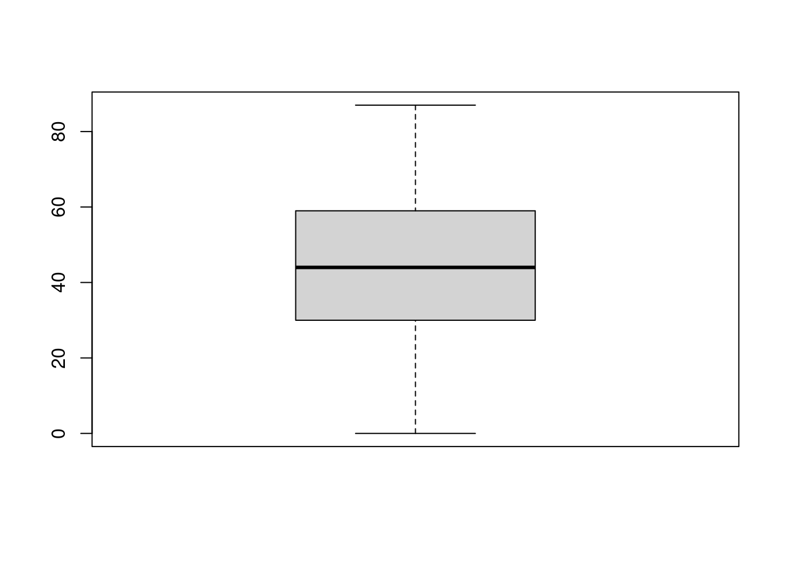

Table of Contents
-
Introduction
-
Prerequisites
2.1 Import Libraries
2.2 Import Dataset
2.3 Preview Datasset
2.4 Dataset Structure
2.5 Convert Categorical variables
2.6 Outliers
2.7 Missing Values
-
EDA with R
3.1 Univariate Analysis
3.2 Bivariate Analysis
3.3 Correlogram
-
Building Predictive Model
4.1 Split train/test Dataset
4.2 Recipes
4.3 Build Model
4.4 Fit
4.5 Evaluate Model
- References
Introduction
Το MSEstonia ήταν ένα επιβατηγό πλοίο το οποίο βυθίστηκε στις 28 Σεπτεμβρίου του 1994.
Prerequisites
Import Libraries
For this analysis we will need standard libraries for importing and processing my data, such as readr (Wickham, Hester, & Bryan, 2022) and dplyr (Wickham, François, Henry, Müller, & Vaughan, 2023). The kableExtra (Zhu, 2021) package was used to print the results in table format.
Finally, the ggplot2 (Wickham, Chang, et al., 2022) package is necessary to create some visualizations, as well as an auxiliary package, ggtext (Wilke & Wiernik, 2022), for further formatting those.
Import dataset
After loading the libraries, I am able to use the commands of the readr package to import my data. My data is in .csv format, so I’ll use the read_csv() command (Wickham, Hester, et al., 2022) to import them.
Code
estonia_passenger_list = read_csv("data/estonia-passenger-list.csv")Preview Dataset
Code
#| label: tbl-preview-dataset
#| tbl-cap: "Preview Dataset (first 6 rows)"
head(estonia_passenger_list, 10) %>%
kbl(
align = 'c',
booktabs = T,
centering = T,
valign = T) %>%
kable_paper() %>%
scroll_box(width = "600px", height = "250px") %>%
kable_styling(full_width = F, position = "center", html_font = "Cambria") | PassengerId | Country | Firstname | Lastname | Sex | Age | Category | Survived |
|---|---|---|---|---|---|---|---|
| 1 | Sweden | ARVID KALLE | AADLI | M | 62 | P | 0 |
| 2 | Estonia | LEA | AALISTE | F | 22 | C | 0 |
| 3 | Estonia | AIRI | AAVASTE | F | 21 | C | 0 |
| 4 | Sweden | JURI | AAVIK | M | 53 | C | 0 |
| 5 | Sweden | BRITTA ELISABET | AHLSTROM | F | 55 | P | 0 |
| 6 | Sweden | GERD INGA MAGNHILD | AHLSTROM | F | 71 | P | 0 |
| 7 | Sweden | HJALMAR | AHLSTROM | M | 60 | P | 0 |
| 8 | Estonia | PILLE | AHMAN | F | 18 | P | 0 |
| 9 | Estonia | TORMI | AINSALU | M | 30 | C | 0 |
| 10 | Sweden | ANNA MARIA | ALDRIN | F | 63 | P | 0 |
Dataset Structure
Our dataset is consisted by 8 variables (columns) and 989 observations (rows). More specifically :
| Variable | Property | Description |
|---|---|---|
PassengerId |
qualitative (discrete) |
Id of passenger, Not important for analysis |
Country |
qualitative (nominal) |
Country of Origin of the passenger |
Firstname |
qualitative (nominal) |
Passenger’s first name |
Lastname |
qualitative (nominal) |
Passenger’s last name |
Sex |
qualitative (nominal) |
Sex of Passenger |
Age |
quantitative (continuous) |
The age of the passenger |
Category |
qualitative (nominal) |
Passenger or member of the crew |
Survived |
qualitative (nominal) |
Did the person survive ? |
Thus, my sample has 8 variables, of which 1 is quantitative and 7 are qualitative (nominal) properties.
Convert Categorical variables
Code
estonia_passenger_list$Country = as.factor(estonia_passenger_list$Country)
estonia_passenger_list$Sex = as.factor(estonia_passenger_list$Sex)
estonia_passenger_list$Category = as.factor(estonia_passenger_list$Category)
estonia_passenger_list$Survived[estonia_passenger_list$Survived == "0"] <- "No"
estonia_passenger_list$Survived[estonia_passenger_list$Survived == "1"] <- "Yes"
estonia_passenger_list$Survived <- factor(estonia_passenger_list$Survived)Outliers and NAs
Code
boxplot(estonia_passenger_list$Age)
On this dataset there are 0 missing values, in total.
Preview Cleaned Dataset
Code
#| label: tbl-preview-dataset
#| tbl-cap: "Preview Dataset (first 6 rows)"
head(estonia_passenger_list, 10) %>%
kbl(
align = 'c',
booktabs = T,
centering = T,
valign = T) %>%
kable_paper() %>%
scroll_box(width = "600px", height = "250px") %>%
kable_styling(full_width = F, position = "center", html_font = "Cambria") | PassengerId | Country | Firstname | Lastname | Sex | Age | Category | Survived |
|---|---|---|---|---|---|---|---|
| 1 | Sweden | ARVID KALLE | AADLI | M | 62 | P | No |
| 2 | Estonia | LEA | AALISTE | F | 22 | C | No |
| 3 | Estonia | AIRI | AAVASTE | F | 21 | C | No |
| 4 | Sweden | JURI | AAVIK | M | 53 | C | No |
| 5 | Sweden | BRITTA ELISABET | AHLSTROM | F | 55 | P | No |
| 6 | Sweden | GERD INGA MAGNHILD | AHLSTROM | F | 71 | P | No |
| 7 | Sweden | HJALMAR | AHLSTROM | M | 60 | P | No |
| 8 | Estonia | PILLE | AHMAN | F | 18 | P | No |
| 9 | Estonia | TORMI | AINSALU | M | 30 | C | No |
| 10 | Sweden | ANNA MARIA | ALDRIN | F | 63 | P | No |
EDA with R
Univariate Analysis
Code
p<-ggplot(estonia_passenger_list, aes(x=Sex, fill = Sex)) +
geom_bar() +
theme_minimal()
p
No Yes
852 137 Code
estonia_passenger_list$Survived[estonia_passenger_list$Survived == 0] <- "No"
estonia_passenger_list$Survived[estonia_passenger_list$Survived == 1] <- "Yes"
estonia_passenger_list$Survived <- factor(estonia_passenger_list$Survived)Bivariate Analysis
Building Predictive Model
Split train/test Dataset
Code
## Split train/test Dataset
set.seed(123)# Create data split for train and test
estonia_passenger_list_split <- initial_split(estonia_passenger_list,
prop = 0.75,
strata = Survived)
# Create training data
estonia_ms_train <- estonia_passenger_list_split %>%
training()
# Create testing data
estonia_ms_test <- estonia_passenger_list_split %>%
testing()Code
head(estonia_ms_train) %>%
kbl(toprule = T,align = 'c',booktabs = T) %>%
kable_styling(full_width = F, position = "center", html_font = "Cambria") | PassengerId | Country | Firstname | Lastname | Sex | Age | Category | Survived |
|---|---|---|---|---|---|---|---|
| 2 | Estonia | LEA | AALISTE | F | 22 | C | No |
| 4 | Sweden | JURI | AAVIK | M | 53 | C | No |
| 5 | Sweden | BRITTA ELISABET | AHLSTROM | F | 55 | P | No |
| 6 | Sweden | GERD INGA MAGNHILD | AHLSTROM | F | 71 | P | No |
| 7 | Sweden | HJALMAR | AHLSTROM | M | 60 | P | No |
| 8 | Estonia | PILLE | AHMAN | F | 18 | P | No |
Code
head(estonia_ms_test) %>%
kbl() %>%
kable_styling(full_width = F, position = "center", html_font = "Cambria") | PassengerId | Country | Firstname | Lastname | Sex | Age | Category | Survived |
|---|---|---|---|---|---|---|---|
| 1 | Sweden | ARVID KALLE | AADLI | M | 62 | P | No |
| 3 | Estonia | AIRI | AAVASTE | F | 21 | C | No |
| 9 | Estonia | TORMI | AINSALU | M | 30 | C | No |
| 12 | Estonia | NELLI | ALEKSEEVA | F | 61 | P | No |
| 17 | Estonia | ARMIDO | ALLAS | M | 31 | P | No |
| 22 | Estonia | PAUL | ANDERSON | M | 32 | C | Yes |
Recipes
Code
preprocessing_recipe <-
recipes::recipe(Survived ~ Sex + Age + Category, data = estonia_ms_train) %>%
recipes::step_other(all_nominal(), threshold = 0.01) %>%
recipes::step_nzv(all_nominal()) %>%
prep()Create Validation Set
Code
cv_folds# 5-fold cross-validation using stratification
# A tibble: 5 × 2
splits id
<list> <chr>
1 <split [592/149]> Fold1
2 <split [592/149]> Fold2
3 <split [593/148]> Fold3
4 <split [593/148]> Fold4
5 <split [594/147]> Fold5Build Logistic Regression Model
Code
lightgbm_model<- parsnip::boost_tree(
mode = "classification",
trees = 300,
min_n = tune(),
learn_rate = tune(),
tree_depth = tune()) %>%
set_engine("lightgbm", loss_function = "squarederror")Hyperparameters tuning
Code
lightgbm_params <- dials::parameters(
min_n(), # min data in leaf
tree_depth(range = c(4,10)), # depth
# In most cases, the optimal depth ranges from 4 to 10.
# Values in the range from 6 to 10 are recommended.
learn_rate() # learning rate
)Code
lightgbm_grid <- dials::grid_max_entropy(
lightgbm_params,
size = 15)
head(lightgbm_grid) %>%
kbl(toprule = T,align = 'c',booktabs = T) %>%
kable_styling(full_width = F, position = "center", html_font = "Cambria") | min_n | tree_depth | learn_rate |
|---|---|---|
| 22 | 7 | 0.0712038 |
| 10 | 6 | 0.0000000 |
| 8 | 10 | 0.0000000 |
| 17 | 5 | 0.0935415 |
| 27 | 9 | 0.0000000 |
| 16 | 8 | 0.0000023 |
Build workflow
Fit
Code
lightgbm_tuned_model <- tune::tune_grid(
object = lightgbm_workflow,
resamples = cv_folds,
metrics = metric_set(roc_auc, accuracy),
grid = lightgbm_grid,
control = tune::control_grid(verbose = FALSE) # set this to TRUE to see
# in what step of the process you are. But that doesn't look that well in
# a blog.
)Evaluate Model
Code
lightgbm_tuned_model %>%
show_best("roc_auc",n=5) %>%
kbl(toprule = T,align = 'c',booktabs = T) %>%
kable_styling(full_width = F, position = "center", html_font = "Cambria") | min_n | tree_depth | learn_rate | .metric | .estimator | mean | n | std_err | .config |
|---|---|---|---|---|---|---|---|---|
| 39 | 9 | 0.0323695 | roc_auc | binary | 0.7682891 | 5 | 0.0311866 | Preprocessor1_Model15 |
| 22 | 7 | 0.0712038 | roc_auc | binary | 0.7640906 | 5 | 0.0293165 | Preprocessor1_Model01 |
| 17 | 5 | 0.0935415 | roc_auc | binary | 0.7593860 | 5 | 0.0280185 | Preprocessor1_Model04 |
| 20 | 5 | 0.0000003 | roc_auc | binary | 0.7514037 | 5 | 0.0277534 | Preprocessor1_Model08 |
| 37 | 7 | 0.0000000 | roc_auc | binary | 0.7506410 | 5 | 0.0234851 | Preprocessor1_Model14 |
Last Fit
Code
last_fit_lightgbm_model = parsnip::boost_tree(
mode = "classification",
trees = 300,
min_n = 4,
learn_rate = 5.9e-05,
tree_depth = 4) %>%
set_engine("lightgbm", loss_function = "squarederror")Code
last_fit_workflow <- lightgbm_workflow %>%
update_model(last_fit_lightgbm_model)
last_rf_fit <-
last_fit_workflow %>%
last_fit(estonia_passenger_list_split)
last_rf_fit %>%
collect_metrics() %>%
kbl(toprule = T,align = 'c',booktabs = T) %>%
kable_styling(full_width = F, position = "center", html_font = "Cambria") | .metric | .estimator | .estimate | .config |
|---|---|---|---|
| accuracy | binary | 0.8588710 | Preprocessor1_Model1 |
| roc_auc | binary | 0.7591549 | Preprocessor1_Model1 |
Major Concerns
As we can see there is a significant difference between train and test results. My model performs better on train and less better on train set. That’s the case of overfitting.
Acknowledgements
References
Citation
@online{2023,
author = {, stesiam},
title = {Predict {Survivors} of {MS} {Estonia}},
date = {2023-03-31},
url = {https://www.stesiam.github.io/english/2023-03-31-Predict-Survivors-of-MS-Estonia/2023-03-31-Predict-Survivors-of-MS-Estonia.html},
langid = {en}
}